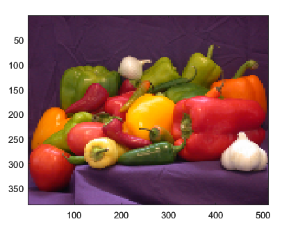

Image Properties
Image appearance and behavior
Image properties control the appearance and
behavior of Image objects. By changing property
values, you can modify certain aspects of the image. Use dot notation to query and set
properties.
im = image(rand(20)); C = im.CData; im.CDataMapping = 'scaled';
Image Data and Quality
Image color data, specified in one of these forms:
Vector or matrix — This format defines indexed image data. Each element defines a color for one pixel of the image. The elements map to colors in the colormap. The
CDataMappingproperty controls the mapping method.3-D array of RGB triplets — This format defines true color image data using RGB triplet values. Each RGB triplet defines a color for one pixel of the image. An RGB triplet is a three-element vector that specifies the intensities of the red, green, and blue components of the color. The first page of the 3-D array contains the red components, the second page contains the green components, and the third page contains the blue components. Since the image uses true colors instead of colormap colors, the
CDataMappingproperty has no effect.If
CDatais of typedouble, then an RGB triplet value of[0 0 0]corresponds to black and[1 1 1]corresponds to white.If
CDatais an integer type, then the image uses the full range of data to determine the color. For example, ifCDatais of typeuint8, then[0 0 0]corresponds to black and[255 255 255]corresponds to white. IfCDatais of typeint8, then[-128 -128 -128]corresponds to black and[127 127 127]corresponds to white.If
CDatais of typelogical, then[0 0 0]corresponds to black and[1 1 1]corresponds to white.
This illustration shows the relative dimensions of CData for
the two color models.

The behavior of NaN elements is not defined.
Data Types: single | double | int8 | int16 | int32 | int64 | uint8 | uint16 | uint32 | uint64 | logical
Interpolation method, specified as 'nearest' or
'bilinear'. MATLAB uses interpolation to display a scaled or rotated version of
the image on your screen. The value you choose does not affect the image
array. However, MATLAB saves the interpolated visual representation of the image if
you save the figure or export the contents of the axes.
Choose an interpolation method based on your image content and the effect you want to achieve:
'nearest'— This method is best when there are a small number of pixel values that represent distinct categories, or when you want to see individual pixels in a highly zoomed-in view. The value of a pixel located at (x, y) is the value of the pixel that is closest to (x, y) in the original image.'bilinear'— This method is best in almost all other situations. The value of a pixel located at (x, y) is a weighted average of the surrounding pixels in the original image. To minimize display artifacts, additional smoothing is applied when you shrink the image.
Since R2022b
Maximum rendered resolution, specified as "none" or a
positive integer value. Use this property to control the maximum resolution
MATLAB uses to display the larger dimension of the image. The smaller
dimension adjusts to preserve the aspect ratio. The value you specify
affects the on-screen display, but it does not affect the image data, which
is stored in the CData property of the image.
Specify "none" to display the image at full resolution.
Specify a number to limit the size of the displayed image. Larger numbers
(and "none") provide higher quality images, but the
initial images might take longer to render. Smaller numbers provide
downsampled images, but they render faster.
In general, images render faster when you specify a value that is smaller than the largest image dimension of the original image. However, if you specify a value that is only one or a few pixels smaller, the initial rendering of that image might take longer than rendering it at full resolution.
Example: Display Downsampled Image
Read peppers.png, which is a 384-by-512 RGB image.
Then call the imagesc function to display the image
using 128 pixels along the larger dimension. The smaller dimension
scales down to 96 pixels to maintain the original aspect ratio.
imdata = imread("peppers.png"); imagesc(imdata,"MaxRenderedResolution",128)
